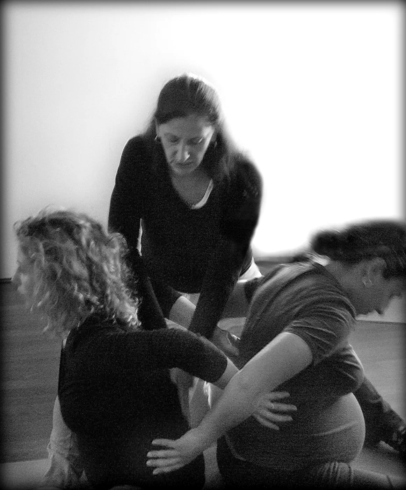

Ascoltarsi, e conoscere il proprio bambino prima ancora che nasca
Un sostegno concreto per vivere i nove mesi con consapevolezza e prepararsi a un parto il più possibile naturale. Si può iniziare in qualsiasi momento dalla 13ª settimana: non serve alcuna esperienza di yoga.


Cosa si fa a lezione
Il corso è condotto da Rosaria Torrisi, insegnante specializzata in Yoga e Donna (gravidanza, maternità, parto e puerperio). Ogni incontro propone:
- posture dolci ed esercizi specifici per la gravidanza, il travaglio e il parto;
- tecniche di respirazione da usare anche durante il parto;
- rilassamento profondo e ascolto del proprio corpo;
- momenti di dialogo tra le partecipanti sui cambiamenti e sulle emozioni dell'attesa.
Una particolare attenzione è dedicata alla percezione del bambino durante la sua crescita, per conoscerlo ancor prima della nascita. Per i papà è previsto un incontro dedicato.
Il percorso continua
Mamma e bambino
Per mamme con bambini dai 3 ai 12 mesi. Esercizi efficaci per recuperare la forma fisica e un rapporto positivo con il proprio corpo, giocando e comunicando con il bambino.
Massaggio infantile
Il massaggio favorisce il benessere del bambino, il contatto affettivo tra genitore e neonato e il rilassamento di entrambi.
Prima di iniziare
- Si può iniziare dalla 13ª settimana e continuare fino al termine della gravidanza.
- È sempre bene avere il parere favorevole del proprio ginecologo o della propria ostetrica.
- Porta abiti comodi, un tappetino, un cuscino e una copertina.
- Giorni e orari del corso si concordano in base alle partecipanti: scrivici per i prossimi incontri.
Vuoi saperne di più?
Raccontaci a che punto sei della gravidanza: ti diremo quando inizia il prossimo gruppo.